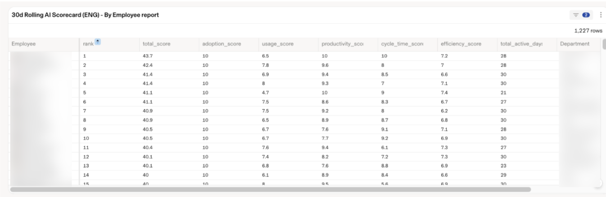

Executive Summary
A report landed at Rippling's executive meeting in March 2026. Spending on AI tokens had reached 40% of the company's R&D payroll budget. From that point on the company, which sells HR and payroll software, began measuring AI spend per person rather than per team, and it recently released the tool it built along the way as an outside product. What matters here is not the savings but what that tool chose to measure.
Once the bill was broken out per person, 10 to 15 percent of employees accounted for roughly 60 percent of all AI spend, and one engineer inside that group had run up $50,000 in a single month. The part worth noting comes next. Rippling's scorecard places prompt counts and PR output beside how often colleagues asked that person to redo work in code review. Measure spend alone and whoever spends the most reads as whoever works the hardest.
For that calculation to hold, prompt logs, GitHub PRs, and review comments all have to resolve to the same person. Most organizations raised their AI budgets without ever making that connection. So two questions remain. Are we recording the data that would let us measure what AI is doing for us, and once that data starts feeding individual evaluation, what has to be agreed on first?
Key figures
Sources: TechCrunch · Rippling
The spending was concentrated in a small group, and even after the response was finished, the amount actually used had not gone down.
$50,000
One engineer's monthly AI spend
A peak that surfaced only after the bill was split per person
40% → 10-15%
Token spend against R&D payroll
Projection after spending caps and model routing
10-15% / 60%
Share of headcount, share of spend
A small group used more than half of all AI spend
600 billion
Tokens used in July
Close to the March peak, at 37% of April's cost
One engineer spent $50,000 in a month
At an executive meeting in March 2026, Rippling CFO Adam Swiecicki put a number on the table. What the company was spending on AI tokens had reached 40% of its R&D headcount budget. It was growing 80% month over month. At that rate, the token bill the following year would come to nearly 90% of what the company paid its highly compensated R&D staff. CPO Matt MacInnis recalled the reaction in three words: "We were incredulous." Nobody in the room believed the figure.
The month the warning came, Rippling burned 605 billion tokens. On a company-wide invoice that is just one large number. So Rippling split the invoice by person, and a distribution appeared. Ten to fifteen percent of employees were using about 60% of all AI spend, and one engineer inside that group had spent $50,000 in a month.
That concentration is not unique to Rippling. In Rize's 2026 tally of enterprise AI spending benchmarks, annual AI spend per employee averaged $2,068, while the top 10% cleared $2,800 and the median came in under $200. A fourteenfold gap. A company average hides it. Nobody actually spends the number you get by dividing the total by headcount.
This is the first lesson of the episode. A company watching only the total cannot explain why the total grew. Only when the same data is recounted per person does the problem become locatable. And once it has been split that way, the next question follows immediately. What did these people build with that money?
The waste came from defaults, not people
Numbers like this pull you toward looking for whoever went on a spree. Rippling's diagnosis went elsewhere. Expensive defaults were simply the norm. In the company's own account, the newest models were set to fast mode, and that was not because anyone had made the decision internally but because nobody had ever looked into the setting and established a best practice. A frontier model was attached even to cleaning up grammar.
The response ran on two tracks. One was negotiation. Spending caps went on each tool the company used, including Cursor, OpenAI, and Anthropic. The other was plumbing. An AI gateway now routes requests to cheaper models depending on the nature of the work. Options such as GLM 5.2, roughly 85% cheaper than frontier models with comparable results, became a destination for that routing.

The effect showed up in unit price rather than in volume. July's internal usage came back to 600 billion tokens, close to the March peak that had triggered the warning, while the cost ran at 37% of April's token spend. The projection for token spend against R&D payroll came down from 40% to 10-15%. MacInnis's explanation is short. It is because they now route to more efficient models. It is not the result of telling employees to use less AI.
So far this is a cost story. With tens of millions of dollars a year at stake it is not a small one, but the result with a longer life came at the next step.
Measure spend alone and the heaviest user looks like the hardest worker
Rippling turned the internal tool it used during all of this into a product called AI Spend Console. It does three things. It breaks cost down by team, role, and department, it attaches that spend to work metrics to surface inefficient use, and it enforces model access policy so requests go to cheaper models. The second one is what matters here. What do you place spend next to?
The AI Scorecard the company published views a single employee through five metrics worth 47.5 points in total. Adoption and usage measure how often and how deeply someone works with the tools, while productivity and cycle time measure what came out of that use. The final efficiency metric ties output and spend into a single ratio.

| Metric | Points | What it looks at |
|---|---|---|
| Adoption | 10 | How often someone prompts agentically each day |
| Usage | 10 | How deeply AI tools are used |
| Productivity | 10 | Output such as PR count and lines of code |
| Cycle time | 10 | Time it took for a PR to merge |
| Efficiency | 7.5 | AI spend relative to output |
Read on its own, the scorecard looks like any developer productivity dashboard. The difference lies in what Rippling asked with these metrics. MacInnis framed the question this way: which engineers have high AI spend, and whose peers frequently ask them to redo work in code reviews?
A cost metric on its own cannot find that person. Somebody with high spend simply reads as somebody doing a lot of work. Read rework frequency by itself and you also catch the learning curve of a new hire that has nothing to do with AI. Only with the two signals side by side does the case separate out where the money is large and the output is what colleagues keep sending back. Placing a quality signal next to a spend metric is the most transferable piece of design in this case.
Look at the scorecard again and one thing snags. Of the 47.5 points, 40 measure how often, how much, and how fast, and the remaining 7.5 ask whether that output was reasonable against the spend. There is no column anywhere for whether the result was any good. So the way Rippling found that person was not by adding one more quality item inside the scorecard. It was by pulling the code review record, which sat outside the scorecard, over next to spend.
One thing Rippling confirmed in the same data backs that judgment up. The productivity signal the company saw was real but not linear. Engineers leaning hard on tools like Cursor were shipping more PRs, but most of the improvement came from initial adoption, and spending more on frontier models did not buy proportionally more. The reason not to use spend as a proxy for performance is left in the company's own data.
Scattered logs can't answer that question
That question comes with a condition attached, though. To place spend and rework side by side, the token usage piling up in vendor consoles and the PRs and review comments in GitHub all have to attach to the same person. Rippling could run this calculation not because it designed a good scorecard but because it had first laid a data layer that takes the person as its axis.
The structure the company calls the Employee Graph is that layer. When external data arrives, it automatically identifies reference fields such as email, employee ID, or username and maps them to an employee profile. The company puts it this way. A GitHub pull request is not treated as a flow row. It is a record connected to an employee and attributes such as their team, role, or department.
Keeping logs and turning those logs into data you can judge with are two different jobs. Most organizations already have the logs. It is just that prompt records pool in a vendor dashboard, code output in GitHub, and review comments in yet another tool, and the identifiers in the three places never connect. In that state, however precisely you total AI spend, you cannot ask what the money turned into.
This is exactly the problem Pebblous keeps returning to in talking about AI-Ready Data. Which entity do you bind raw logs to, and what lineage do you attach to them? The Rippling case is an unusually concrete illustration of what a company that did that work first gets to ask later.
The moment AI usage logs become HR data
Measurement itself has already spread. In a 2026 ModelOp survey of 100 enterprise AI leaders, one CTO said that almost every Fortune 500 is tracking overall AI usage while very few track what the board actually cares about, which is whether that spending delivers a return. Deloitte's 2026 research found 93% of AI budgets going to technology and only 7% to people and workflows. That is how far apart counting usage and measuring effect still sit.
What Rippling crossed is that distance. And at that moment the nature of the metrics changes. Once prompt frequency, PR counts, and review rework requests gather under one person's name, they are no longer infrastructure cost data. They are HR data. As CNBC noted in May, monitoring employee AI use already sits inside the surveillance debate. Rippling also used this data in the other direction, naming strong users AI Captains and giving them a coaching role, but the same metrics can serve as grounds for evaluation and headcount decisions.
Hold this case up against our own organization and the questions narrow to two.
- • Are we recording the data that would let us measure what AI is doing? Start by checking whether prompt logs, output, and review feedback connect along a person, or sit in three separate tools. If they do not connect, the AI budget approved this year will be no more provable next year.
- • Once that data feeds individual evaluation, what has to be agreed on first? Which metrics get looked at, how far they are used, and who gets to see them are better settled before measurement begins. Deciding the purpose after building the metric makes that order itself a reason for distrust.
Rippling's savings are estimated in the tens of millions of dollars a year. What another company can copy, though, is not the savings but the sequence. Split spend per person, put a quality signal in the column beside it, and attach the logs to people so that the calculation is possible at all. Any organization that has decided to raise its AI budget could start by counting how far down that list it has gone.
Editor's Note
The concern Pebblous has been describing as AI-Ready Data catches on this case. To use data for judgment, provenance and quality and connections have to stand first, and that work has to be finished long before anyone builds a dashboard. Measuring AI spend holds together only on the same conditions.
References
Primary Reporting & Official Sources
- 1.TechCrunch. (2026). "After Rippling blew millions on AI in months, it built an employee ROI tool."
- 2.Rippling. (2026). "Introducing Rippling AI Spend Console." Rippling Blog.
Industry & Market Sources
- 3.CNBC. (2026). "'Almost every Fortune 500 is tracking overall AI usage': What that means for employees."
- 4.Rize. (2026). "AI Spending Per Employee: The $2,068 Benchmark Your CFO Needs." Rize Blog.
- 5.ModelOp. (2026). Survey of 100 enterprise AI leaders on the gap between AI usage tracking and ROI measurement. modelop.com